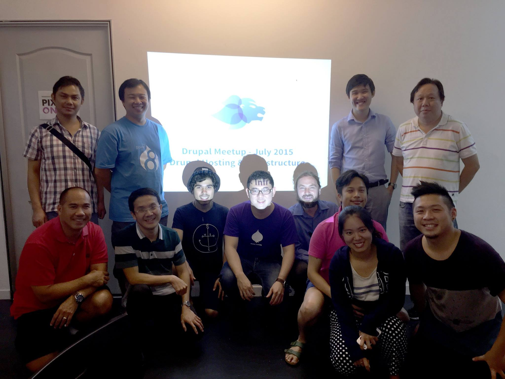
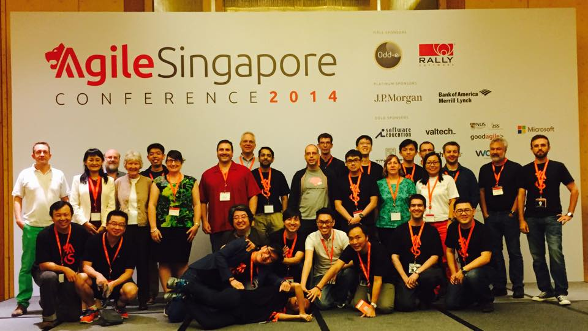
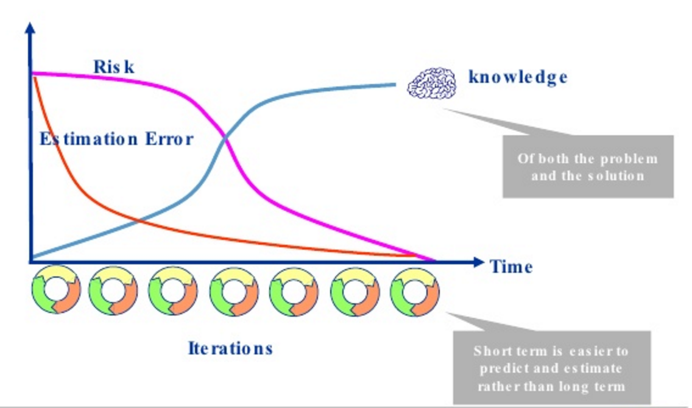
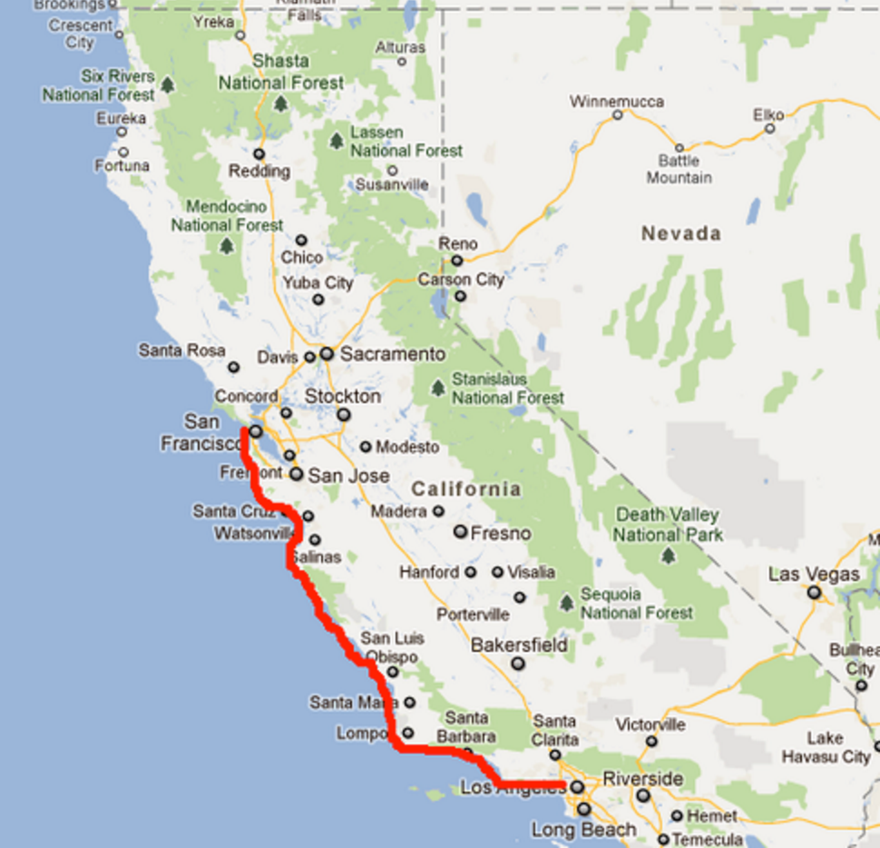
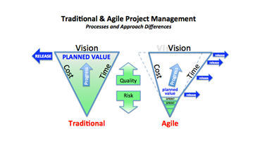
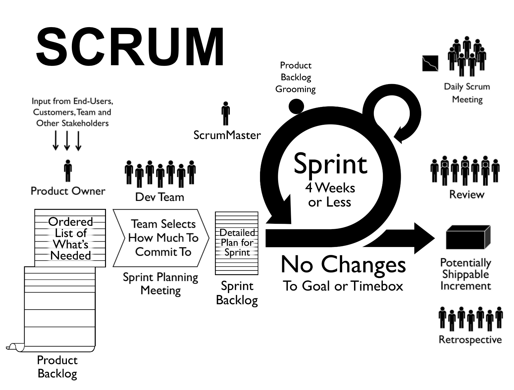

name: separator layout: true class: center, middle, separator background-image: url(images/bg_purple_diamond.jpg) <img src="images/po-onion-icon.png" width="50"/> --- name: normal-no-footer layout: true class: top, left, normal background-image: url(images/bright_squares.png) --- name: normal layout: true class: top, left, normal background-image: url(images/bright_squares.png) .footer.left[ ] .footer.right[ Ingredients for .bwe.light-purple[better web experiences] .link[[www.pixelonion.com](http://www.pixelonion.com)]] --- class: left, middle, title-page # Scrum for Drupal projects _DrupalCamp Manila 2016_<br/> _SJ_ ??? Scrum and Agile adoption have been increasing in the past few years. Can Drupal projects apply Scrum? Can Drupal shops apply Scrum? In this session, I will share introduction on Agile and Scrum. I will share my experience, successes and challenges in adopting Scrum to run my Drupal shop. Finally I will share the tools used to facilitate Scrum in Drupal projects. --- # Introduction - SJ -- (Solihin Jinata) -- - Co-founder and Technical Director at Pixel Onion ??? Pixel Onion is an award winning Singapore based digital agency. We help medium and large organisations with digital strategy, user-centric design and web platform development. We have the ultimate goal of empowering our clients to take charge of their own site and eventually become more productive and profitable. We may be the only pure Drupal shop in Singapore. Our team is behind some of the larger Drupal sites in Singapore, including Singtel, SMU, TODAYonline. I do everything from sales to back end to front end to support & maintenance. -- - Started with Drupal 5 -- - Certified ScrumMaster -- - Lucky husband and proud dad -- - Active in Singapore Drupal and Agile community -- <div>   </div> --- # Agenda 1. [Agile & Scrum](#scrum) 2. [Drupal & Scrum](#drupal) 3. [Our experience](#experience) 4. [Tools used](#tools) 5. [Summary](#summary) ??? Can I get a show of hand how many people here: - know what agile is? - certified scrum master / developer / product owner? - regularly use scrum in day to day work? What is your definition of agile? _Ask 3 people_ --- name: scrum template: separator # Agile & Scrum ### What are they and why should we care? --- # Web design In the beginning, there was only text. <div><img src="images/scrum/dark.gif" height="110"></div> --- # Web design In the beginning, there was only text. Then comes HTML (tables!!) <div><img src="images/scrum/tables.gif" height="110"></div> --- # Web design In the beginning, there was only text. Then comes HTML (tables!!). Then comes Javascript. -- Then comes Flash. -- Then comes CSS. -- Then comes database web application, grid, responsive, polyfill, front end frameworks ... .footnote[ http://blog.froont.com/brief-history-of-web-design-for-designers/<br/> http://buytaert.net/state-of-drupal-presentation-june-2014] --- # Web design projects - Some think web design is still based on # of static pages. ??? No thanks to WYSIWYG, non-techie (business owners, and worse, business analyst) -- - Some think digital design in terms of print design. ??? It is more feasible now but the two domain is still pretty much separated. -- - Some think it is _easy_ to come up with something _similar_. ??? This is just another ecommerce site. There are so many ecommerce sites out there. Why can't you do it? Why do you charge so high? -- - Some think it is equally _easy_ to create applications. ??? With the technology advancement / ease of use, people tend to be biased that it's easy to create applications. --- # Web design projects (reality) - Web project is no longer web _design_. It is web _application_. -- - Web is no longer static pages. It is software development. ??? build script, configuration management, continuous deployment, automated testing, continuous integration, etc. -- - No single site is the same. ??? Every site is as unique as the person / company behind it and the users using the site. -- - Almost every site requires customisation. ??? Once someone approaches freelancer / agency it is because (s)he finds that the DIY tools doesn't make the cut, and thus the need to customise. -- - Clients require vendors to "estimate" the project. ??? (and later on use this as fixed cost figure) project with minimal information given. --- # Web design projects (reality) - The problem about estimate is that it's almost always wrong and even worse when we estimate at the start of the project where our knowledge about project and client is _zero_. -- <div style="display: inline-block; width: 60%; vertical-align: top; "> .caption[ From http://www.slideshare.net/xamat/agile-science] </div> -- <div style="display: inline-block; width: 40%; vertical-align: top; "><a href="https://www.quora.com/Why-are-software-development-task-estimations-regularly-off-by-a-factor-of-2-3/answer/Michael-Wolfe?srid=3Gx" target="_blank"></a> .caption[ From [Quora](https://www.quora.com/Why-are-software-development-task-estimations-regularly-off-by-a-factor-of-2-3/answer/Michael-Wolfe?srid=3Gx)] </div> --- # Agile ??? As web project is now a software development projects, the original tools used to handle static web project is no longer valid. There are more uncertainties involved in the project. True, not all projects have the same amount of uncertainties. But again, as mentioned before, every client is unique. In the meantime, while web was growing, in Feb 2001, 17 software developers held meeting in Snowbird. -- ###Agile manifesto **Individuals and interactions** over processes and tools **Working software** over comprehensive documentation **Customer collaboration** over contract negotiation **Responding to change** over following a plan ??? Agile nowadays is a buzz word just like "eco" or "i-something" or "nature" or "cloud". But Agile is more than that. Like Dave Thompson wrote "Agile is dead. Long live agility.", the idea behind Agile has always been the philosophy rather than the tools. Wagile, ScrumBut --- # Agile as PM approach  .caption[From [OPPM](https://www.oppmi.com/Seriously_Simple_Snippets.cfm/tags/Agile/Count/2/TagLookup)] ??? Does it mean that budget for Agile project is unknown? No, not necessarily. We can still conduct fixed-iteration Agile projects. --- # Scrum - Created by Ken Schwaber. - One of Agile methodologies to manage product development. - Quick iteration of building, testing, and getting feedback. .footnote[ http://www.scrumprimer.org/] --- <div align="center"></div> --- # Waterfall vs Scrum .contain[ ] .caption[From [Vesa Palmu's wunderkraut's blog](http://wunderkraut.com/blog/how-to-fail-in-a-drupal-project-fixed-price-contracts/2013-07-10)] --- name: drupal template: separator # Drupal & Scrum ### How is Scrum related to Drupal? --- # Drupal as CMS / CMF - Thousands of contrib modules out there. -- - Expert developers / site builders can create sites with zero / minimal lines of code. ??? using few powerful contrib modules (ctools, panels, views, entityreference, rules, fieldgroup) -- - 80/20 percent rule. ??? Due to the complexity of web projects nowadays, some client will indeed hit that 20% rule. --- template: normal-no-footer # News site .contain[ ] ??? Used to be done by open publish, now seems like thunder is taking reign. --- template: normal-no-footer # University site .contain[ ] ??? It is also more of publication site with specific features. There may be distro out there which I don't know yet. --- template: normal-no-footer # Ecommerce site .contain[ ] ??? Commerce and commerce kickstart --- template: normal-no-footer # Open data portal .contain[ ] ??? Use DKAN --- template: normal-no-footer # Social networking site .contain[ ] ??? Use commons --- # Drupal & Scrum - Is Agile (rather than Waterfall) always necessary in Drupal projects? ??? Not always. But as mentioned, complexity of sites nowadays and the fact that people approaches freelancers and agencies show some degree of unknown in the project. -- - Should we use Scrum to manage Drupal projects? -- <br/>Benefits even in fixed cost project / fixed iteration projects: - Building trust. -- - Building what matters most. -- - Shared ownership with client. -- - Ability to adapt without compromise is priceless. --- # Drupal & Scrum - Drupal structure goes hand-in-hand with user story format.<br/> _As a < role >_<br/> _I can do < something >_<br/> _so that < reason / context >_ -- - Thousands of modules allow project to be done in quick iteration. -- - Good support of TDD / BDD. -- - Drupal project team can be kept small. --- name: experience template: separator # Our experience ### How do we use Scrum in our Drupal projects? --- # Beggars can't be choosers - When we started, we need more experiences and businesses. -- - Drupal market in Singapore is not established, even worse when we started in 2011. -- - We were competing with other _web design_ agencies. -- - Projects are mainly fixed features with fixed cost. ??? Because of all these, we took on any kind of project, including fixed cost project with fixed features. And. We got burned. A lot. Scope creep, project goes overbudget, etc. --- # Strategy switch - In 2013, we moved towards self managing team. ??? Engaged Odd-e to be our Scrum coach. -- - By 2014, everyone attended Scrum training. ??? Most have the Certified ScrumMaster certification from Scrum Alliance. -- - We have been doing 99% Drupal since we were founded. ??? Being specialist is good because we can focus on depth rather than breadth. We know best practices. We keep being updated with implementations. Even so, we are still lagging behind. -- - By end 2014, we switched our marketing message.<br/> "The only Drupal shop in Singapore." -- - Continue educating leads on Agile and Scrum. -- - On some risky projects, we insist on T&M or fixed-iteration model. ??? Risky projects are usually product based or support takeover from other vendors. --- # Outcome - Hits and misses. -- - Generally positive outcome. ??? Positive means that clients accept Scrum, sprint based billing or fixed-iteration with potential time and material extension. We can't really tell which one we did had the most positive impact. -- - The greatest challenge: one team with multiple projects. ??? From this we learn that we can manage individual project with Scrum. But it does not make sense to manage the whole agency using Scrum. --- # How: during pre-sales - Client education, sell the benefit of Agile. -- - Run a short sprint simulation. ??? Learned the hard way: One client requests agile but in RFP documents all pointing to Waterfall. -- - Build relationship with client's product owner. -- - Arrange shorter fixed-iteration model to build trust. --- # How: during project -- - Learn which guidelines are to be followed strictly. ??? YMMV. We learned that sprint planning, sprint review are compulsory for project progress. Daily standup with product owner and retro is very good for building trust with client. We mostly skip refinement session. -- - Constant interaction and quick feedback, positive or negative, are keys. --- name: tools template: separator # Tools used ### Which tools can help? --- # Most important ingredients - Go back to Agile Manifesto. -- - All boils down to <u>frequent</u> and <u>direct</u> <u>human interaction</u> <u>with feedback</u>. ??? It's not about the tools. -- - Communication is everyone's responsibility. ??? Not only ScrumMaster's. --- # Tools - Trello: [sample board](https://trello.com/b/ZHzZCaW7). ??? This is replacement of post it for us. Learn how to use Trello for the most optimal outcome. Learn markdown. Learn Trello shortcuts. Trello is just like Excel. -- - Chrome extension: [Plus for Trello](https://chrome.google.com/webstore/detail/plus-for-trello-time-trac/gjjpophepkbhejnglcmkdnncmaanojkf?hl=en) ??? Useful for time logging. Can calculate velocity. Can print burndown chart. -- - TDD / BDD: simpletest or behat -- - Remote work: use <u>few</u> good communication and collaboration tools - Slack - Google apps - appear.in / Hangout -- - Integrate the tools. ??? Github to Trello / Slack Toggl to Trello / Slack --- name: summary # Summary - More complex sites require different approach: Agile. - Scrum fits Drupal projects. - Constant interaction and quick feedback, positive or negative, are keys to successful Drupal projects. --- template: separator # That's all folks ### Feedback and questions --- template: separator # How to reach me sj at pixelonion.com<br/> www.drupal.org/u/loziju<br/> Drupal Philippine FB<br/> Drupal Singapore FB<br/> Made with [remark.js](http://remarkjs.com/)